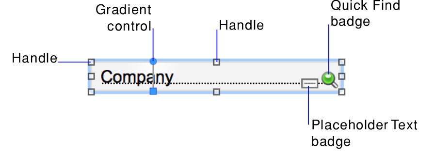

1. In
Layout mode, click the Selection tool  in the
status toolbar.
in the
status toolbar.
You edit a layout by working with the objects on the layout—positioning and arranging them, resizing them, and making other changes to their appearance. You can change the formatting attributes of layout parts and the layout background by, for example, changing their fill settings. You can also work with fields—controlling how a field looks and behaves as well as how data appears in the field.
As you work with an object, you see various controls, badges, and other elements that provide information about the object and indicate how you can edit it. See Resizing and reshaping objects, Filling with a color gradient, and Identifying badges (icons) on layout objects.

1. In
Layout mode, click the Selection tool in the
status toolbar.
The pointer becomes an arrow pointer.
2. Do one of the following.
To | In Layout mode, do this |
Select one object | With the arrow pointer, click the object. |
Select several objects at once | •Drag the arrow pointer to make a selection box that includes the objects. The selection box does not have to completely surround the objects. To avoid including partially selected objects, press Ctrl (Windows) or Command (macOS) as you drag. Note When you're selecting objects on a popover, make sure the arrow pointer is on the popover, and not the layout, when you begin dragging. Otherwise, objects on the layout are selected instead. •Or, press Shift as you click each object individually. |
Select an object in a group | With the arrow pointer, click the group, then click an object inside the group. |
Select all objects on the layout | Choose Edit menu > Select All. |
Select a panel control | •With the arrow pointer, click inside the background of the panel control. •Or, drag the arrow pointer around any portion of the panel control boundary. |
Select a popover | With the arrow pointer, double-click the popover button to open the popover. Then click the popover to select it. |
Select all objects of the same type, including objects on tab panels or slide panels that are not in front (for example, all text objects or all rectangles) | •Click the tool for the type of object to select, then choose Edit menu > Select All. •Or, with the arrow pointer, click an object, press Shift (Windows) or Option (macOS), and choose Edit menu > Select All (Windows) or Select Same (macOS). Note Objects on popovers are not selected. |
Select all fields | With the arrow pointer, click a field, press Shift (Windows) or Option (macOS), and choose Edit menu > Select All (Windows) or Select Same (macOS). |
Select a portal | With the arrow pointer, click the border of the portal, or any other area within the portal that doesn't contain a field or object. |
Select a button bar | •With the arrow pointer, click anywhere outside the button bar, then click inside the button bar. •Or, drag the arrow pointer around any portion of the button bar boundary. |
Select segments in a button bar | With the arrow pointer, select the button bar, then click one segment or Shift-click multiple segments. |
Deselect selected objects | •Click a blank area of the layout or any layout tool in the status toolbar. •Or, press Shift and click selected objects. |
•If an object's selection handles display as , the object is locked. See Protecting objects from change.
•If you can't see or select an object on a layout, other objects may be stacked in front of the object. To hide other objects, see Using the Objects tab to work with objects.